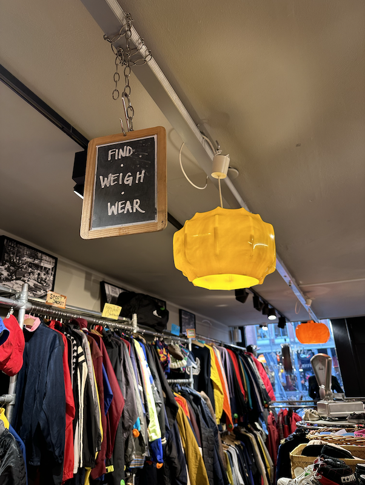

Welkom op Volkan's Vintage
"Google, zoek een duurzame vintage store in Amsterdam". Hebbes! je bent op de juiste site terecht gekomen, welkom op de handigste vintage site van heel Amsterdam! Ik kan je nu al vertellen dat er dat er een wereld voor je open gaat. Ik heb laatst een geweldige duurzame vintage store gevonden, oftewel de Kilo/Store in Amsterdam, zij hebben een unieke werkwijze, en natuurlijk een hoop leuke maar natuurlijk duurzame kleding.
Kilo / Store
Kilo / Store is de winkel voor vintage kleding van hoge kwaliteit voor een lage prijs. Deze organisatie heeft meerdere locaties in Amsterdam.
Werkwijze
Kilo / store werkt op een hele andere manier dan andere winkels, er is namelijk een systeem, de prijzen van de kleding die ze verkopen zijn gebasseerd op het gewicht dat ze dragen.
Locaties
Kilo / Store kent meerdere locaties in Amsterdam
Blog
Uiteraard heb ik een eigen blog over dit bedrijf, dit brengt verandering toe aan de wereld! een goed duurzaam initatief. In mijn blog krijg je veel meer te zien van de sfeer.